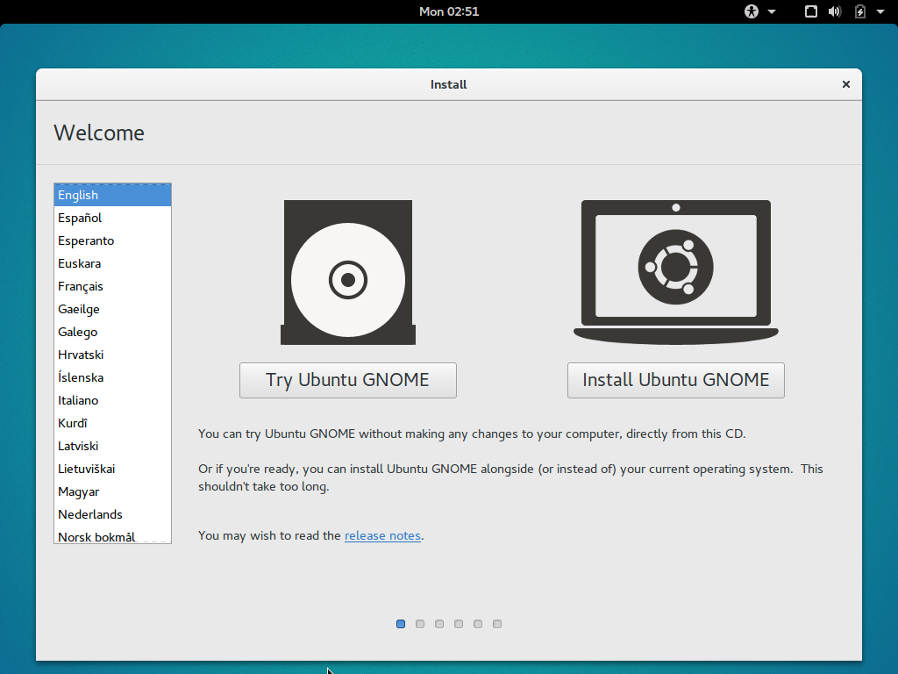
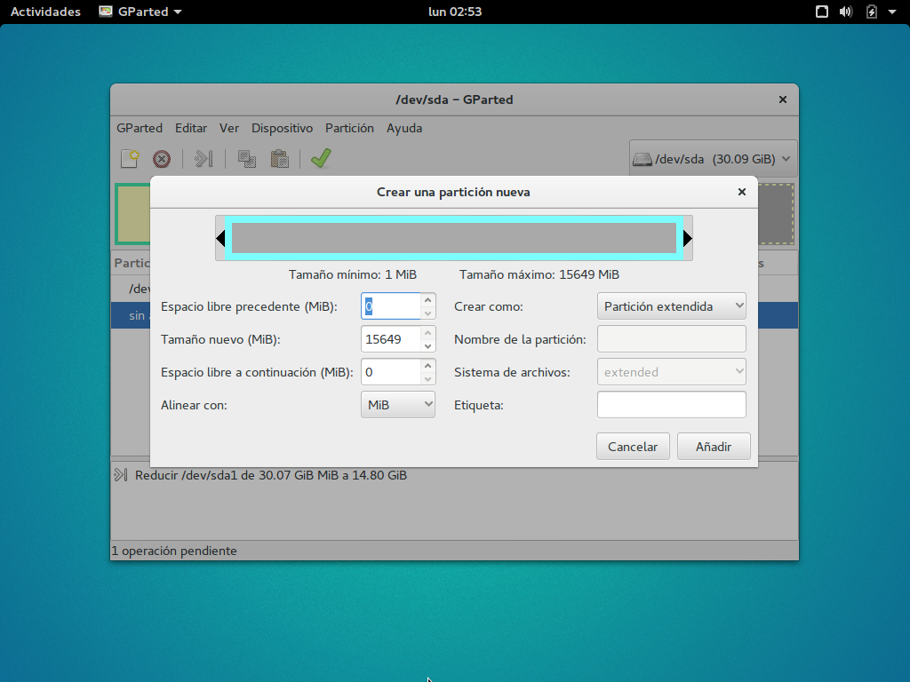
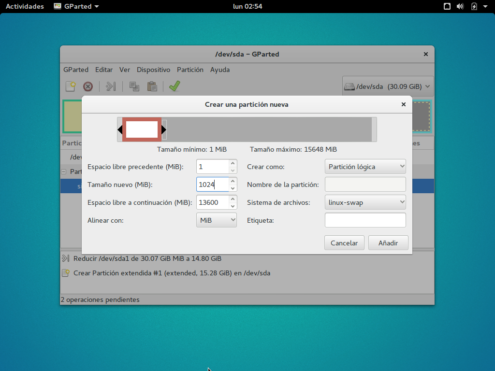
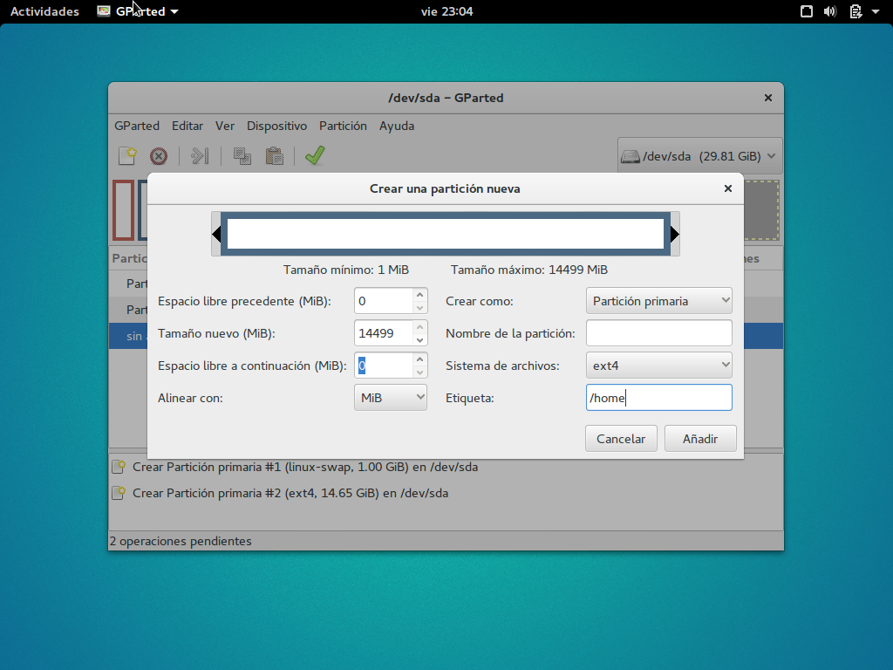
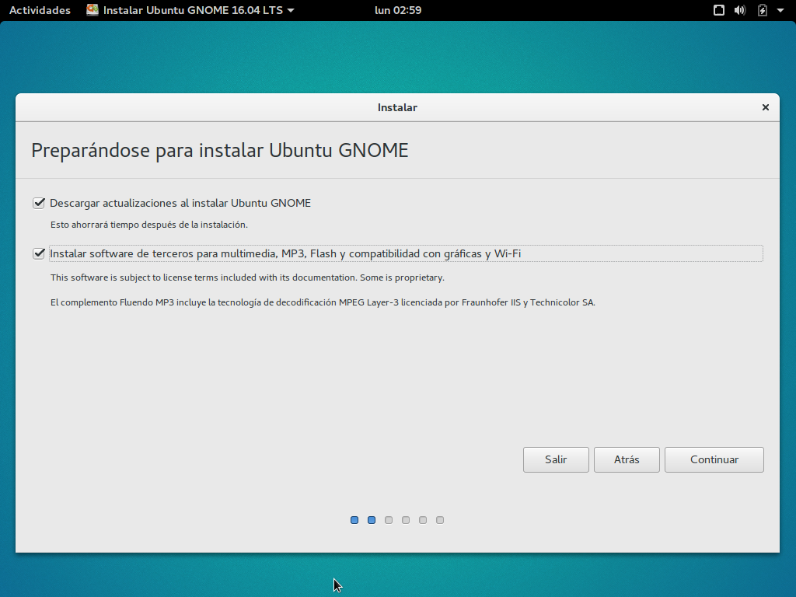
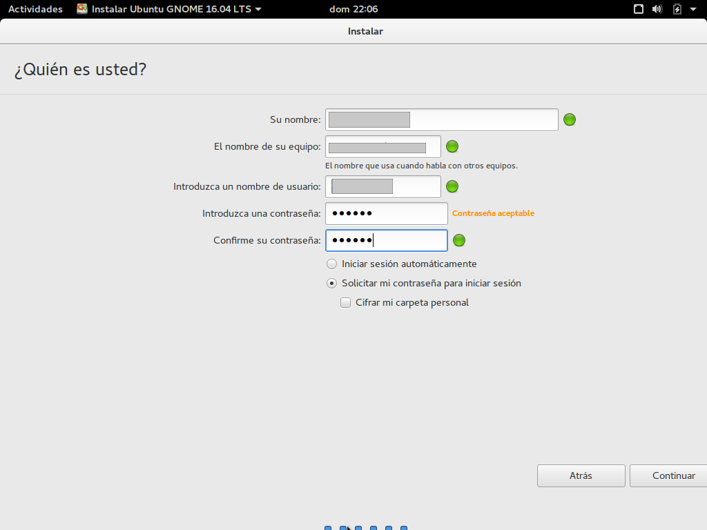
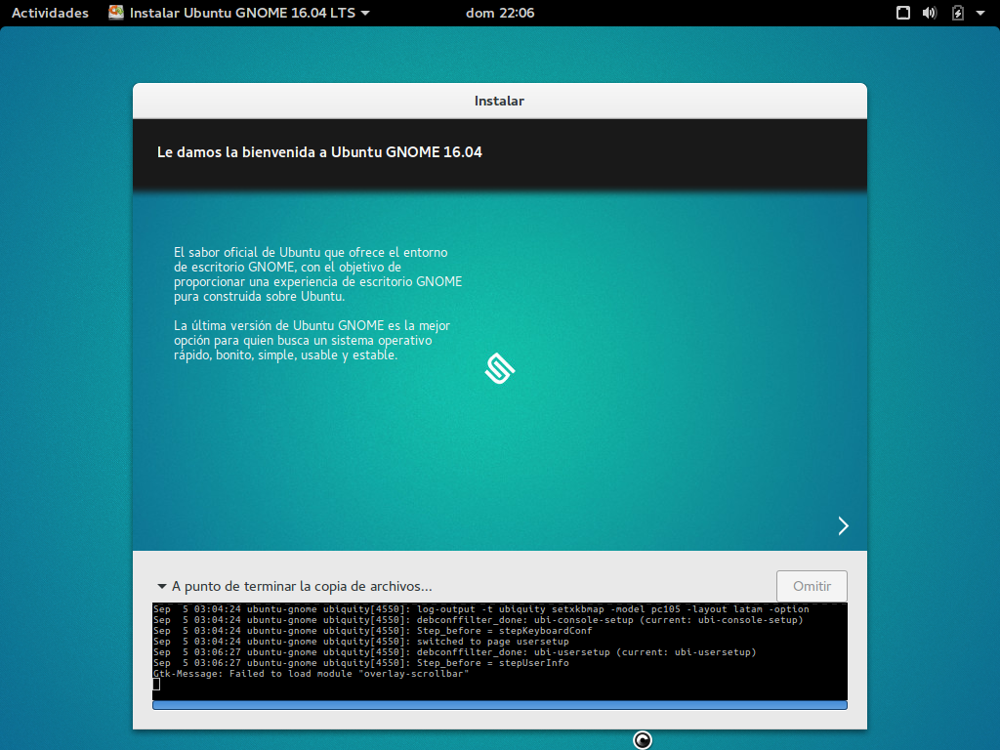

Ubuntu es un sistema operativo basado en debian lo que lo hace una opción muy segura entre todas las que exiten ya que tiene un gran respaldo de la comunidad, es bastante estable, cuenta con una gran cantidaad de repositorios, etc. En este caso vamos a instalarlo con la versión de escritorio Gnome.
* Procesador 1 GHz(recomendado dualcore 2.4GHz)
* 7GB libres en disco duro (recomendado 40GB)
* 1.5GB de RAM (Recomendado 3GB)
¡DESCARGA AQUI UBUNTU GNOME!
Despues de insertar nuestro disco o usb con Ubuntu Gnome nos encontramos con una interfaz gráfica con la que podemos interactuar con el sistema operativo mientras se instala, En este caso vamos a instalar ubuntu junto a windows para tener dual boot así que vamos a seleccionar la opcion de probar Ubuntu

2. Particionando el disco
Para particionar nuestro disco vamos a usar Gparted, una aplicación que viene preinstalada en el live, y vamos a crear una nueva partición extendida del tamaño total del disco que vamos a usar.

Creamos una partición de la mitad de la RAM que tengamos, como sistema de archivos le ponemos linux-swap, esta partición lo que hace es ayudar a la RAM a sostener los procesos repetitivos para evitar que se llegue a colgar en algún momento.

La siguiente partición es en la que se va a instalar el sistema operativo minimo puede ser de 2GB pero lo recomendable es dejarla de unos 12GB, sistema de ficheros va a ser ext4 y como etiqueta le ponemos "/"

La partición home es en la que se almacena toda la información que nosotros almacenemos en la pc, el tamaño va a ser de todo lo que quede sobrando. Esta partición la hacemos para guardar nuestra información, así cuando querramos instalar otra distribucion de linux la instalamos sobre "/" y de esta forma nuestra informacion queda intacta en /home.

6. Preparando instalación
Despues de tener listas nuestras particiones vamos a picarle a la palomita para que guarden los cambios, cerramos el Gparted, picamos en el icono que dice intalar ubuntu gnome, seleccionamos nuestro idioma, continuar, si tenemos una buena conexión a internet y no necesitamos apurarnos le damos en instalar actualizaciones y continuar.

Podemos darle en instalar junto a windows pero vamos a hacerlo manualmente, entonces le damos click a más opciones y a continuar.

8. Seleccionando las particiones
Aquí simplemete seleccionamos las particiones que creamos anteriormente en Gparted y le damos a intalar y continuar.

Aqui solo le damos nombre a la maquina, nombre al usuario, agregamos una contraseña y le damos en continuar.

Llegados a este punto lo unico que debemos hacer es esperar a que se termine de instalar nuestro Ubuntu Gnome.
